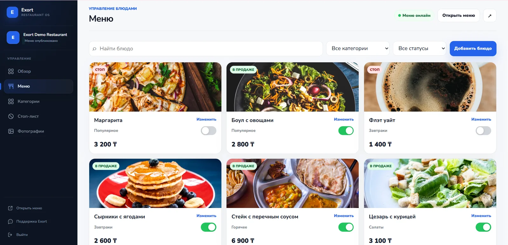

Цифровое меню для заведений
Ваше меню.
В характере
заведения.
Exort создаёт цифровое меню под стиль заведения и даёт владельцу админ-панель, аналитику и отдельные QR-коды для разных точек входа.
Меню для гостяEXORT / DEMO

01 / Продукт
Красиво для гостя.
Понятно для владельца.
Гость быстро находит нужное. Команда заведения обновляет меню и видит интерес аудитории в одном рабочем пространстве.
Меню для гостя
Дизайн адаптируется под характер ресторана, кофейни, бара или гостиницы. Структура остаётся быстрой и понятной на любом телефоне.
Без установки приложения и без тяжёлого PDF.
Открыть живое демо- 01Поиск и категорииНужное блюдо находится за несколько касаний.
- 02Фото и подробная карточкаОписание, цена, состав и доступность собраны вместе.
- 03KZ · RU · EN · TRПереключение языка и автоматический перевод.
- 04Стиль заведенияЦвет, типографика и подача подстраиваются под бренд.
02 / Управление
Меню меняется тогда, когда это нужно заведению.
Команда управляет содержанием самостоятельно и сразу видит результат на гостевой странице.

-
01
Создавайте позиции
Название, описание, цена, вес и фотография.
-
02
Управляйте структурой
Категории, порядок и временное скрытие.
-
03
Включайте стоп-лист
Недоступная позиция сразу меняет статус.
-
04
Проверяйте контент
Видно, где не хватает фото или перевода.
-
05
Переводите автоматически
Черновик перевода можно проверить перед публикацией.
-
06
Смотрите предпросмотр
Изменения видны глазами гостя до запуска.
03 / Аналитика интереса
Владелец видит интерес
Exort показывает открытия меню, вовлечение, интерес к позициям и источники переходов. Это не данные о заказах или выручке.
01
Популярные блюда
Интерес к позициям
02
Когда изучают меню
Дни и часы
03
Главный источник
Языки · Устройства
Посмотреть пример аналитики
Все показатели и названия в блоке аналитики демонстрационные и не относятся к реальному клиенту.
АналитикаПоследние 7 дней
Все источникиДЕМО-ДАННЫЕ
Активность гостейСессии по дням
+18% к прошлой неделе
Пн128
Вт151
Ср139
Чт184
Пт246
Сб297
Вс217
-
↗
В пятницу меню открывали на 34% чащеПик интереса — с 18:00 до 21:00
-
02
Фисташковый раф поднялся на второе местоРост открытий за последние семь дней
-
!
Три позиции почти не открываютСтоит проверить фото, название или расположение
Интерес к позициямПопулярные блюда
Открытия
01Тирамису MORI418
02Фисташковый раф343
03Круассан с лососем268
04Летний ягодный боул79
Дни и часыКогда изучают меню
12151821
Пн Ср
Пт Вс
ЯзыкиKZ 18%RU 64%EN 11%TR 7%
УстройстваiOS 58%Android 42%
Главный источникГлавный зал326 сессий
DEMO
QR-коды и источники
Каждая точка входа получает своё имя.
Один дизайн меню, разные QR-коды и ссылки. В аналитике видно, откуда открывали меню: из зала, Instagram, номера гостиницы или зоны ресепшен.
Источники показывают переходы и вовлечение, а не покупки или выручку.
Источники менюDEMO · 7 активных
Демонстрационные значения
- Главный зал
- 326 сессий
- 94 сессии
- Гостиница
- 61 сессия
- Летняя терраса
- 48 сессий
DEMO-ДАННЫЕ · период 7 дней
Для разных форматов
Продукт один. Сценарий зависит от заведения.
01 · РЕСТОРАН
Основное меню, сезонные предложения и стоп-лист без перепечатки.
Категории, фотографии, несколько языков и источники для залов или столов.
- Меню для гостей
- Стоп-лист
- Аналитика интереса
- QR по зонам
02 · КОФЕЙНЯ
Быстрое меню с акцентом на новинки, сезонные напитки и завтраки.
Понятная мобильная подача и быстрые изменения цены или доступности.
- Сезонное меню
- Карточки напитков
- Автоперевод
- Instagram-ссылка
03 · БАР
Коктейльная карта, винная подборка и позиции, которые меняются вечером.
Фильтры, описания вкуса и оперативное управление стоп-листом.
- Коктейльная карта
- Категории и фильтры
- Стоп-лист
- Аналитика по времени
04 · ГОСТИНИЦА
Меню ресторана и завтраков плюс понятная информация для гостей.
Отдельные QR-коды для номеров, ресепшен, ресторана и других зон.
- Меню ресторана
- Завтраки
- Информация для гостей
- QR по номерам и зонам
04 / Подключение
От вашего меню до запуска — четыре понятных шага.
-
01
Вы передаёте материалы
Меню, логотип и фотографии, которые уже есть у заведения.
-
02
Exort собирает страницу
Настраиваем структуру, стиль, языки и содержимое меню.
-
03
Вы получаете доступ
Передаём QR-коды и рабочую админ-панель владельца.
-
04
Управляете самостоятельно
После запуска меняете позиции, цены и доступность без разработчика.
05 / Стоимость
Один продукт. Два способа оплаты.
Функции остаются одинаковыми. Годовой вариант снижает ежемесячную стоимость и даёт дополнительную скидку.
Годовой план оплачивается за 12 месяцев. Дополнительная скидка 20 000 ₸ уже учтена в итоговой сумме.
- Цифровое меню для гостейвключено
- Админ-панель и стоп-листвключено
- 4 языка и автоматический переводвключено
- Аналитика и QR-источникивключено
Интеграции
Следующий шаг
Покажите гостю меню, которое соответствует вашему заведению.
Посмотрите гостевое меню. Возможности админ-панели показаны выше — доступ к ней получает только владелец после подключения.
Посмотреть демо-меню